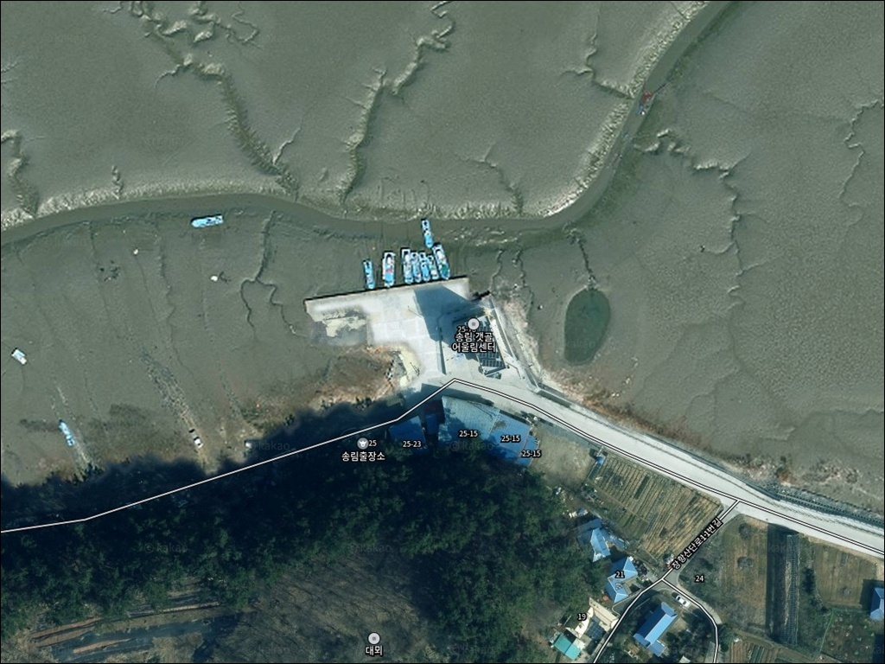
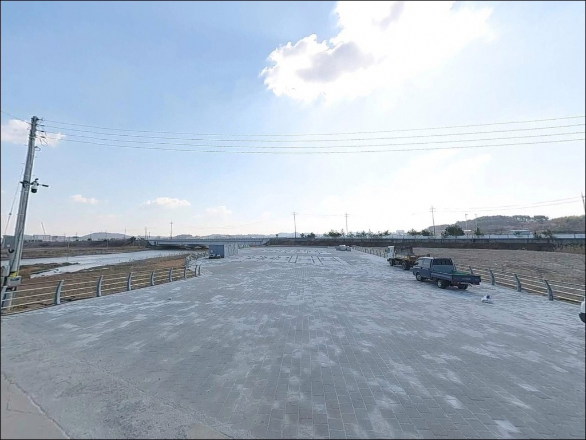
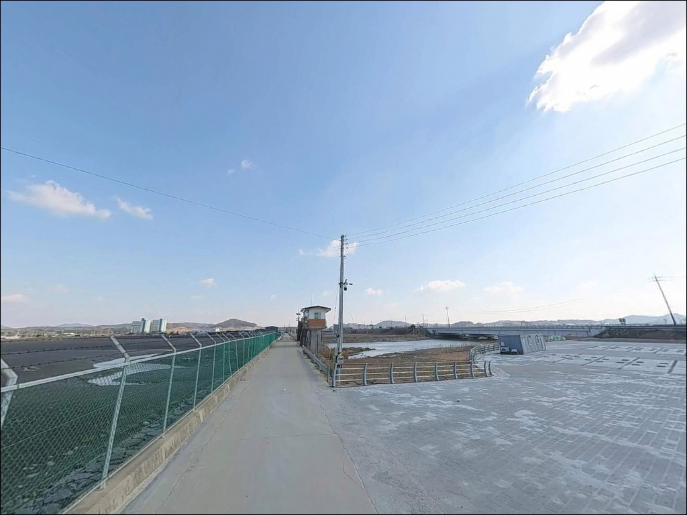
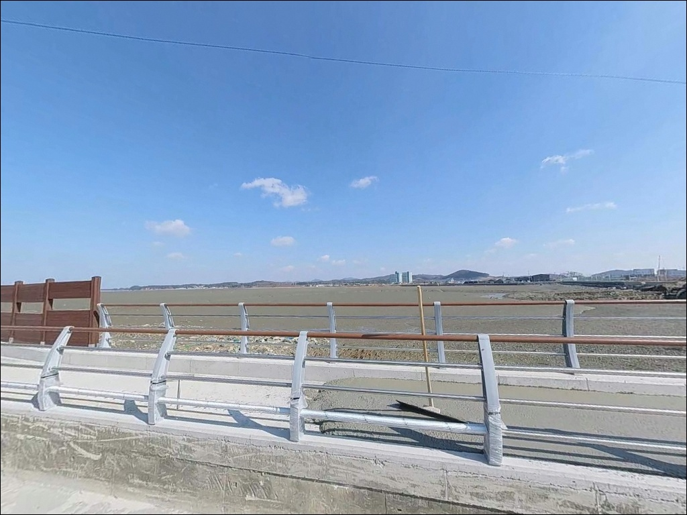
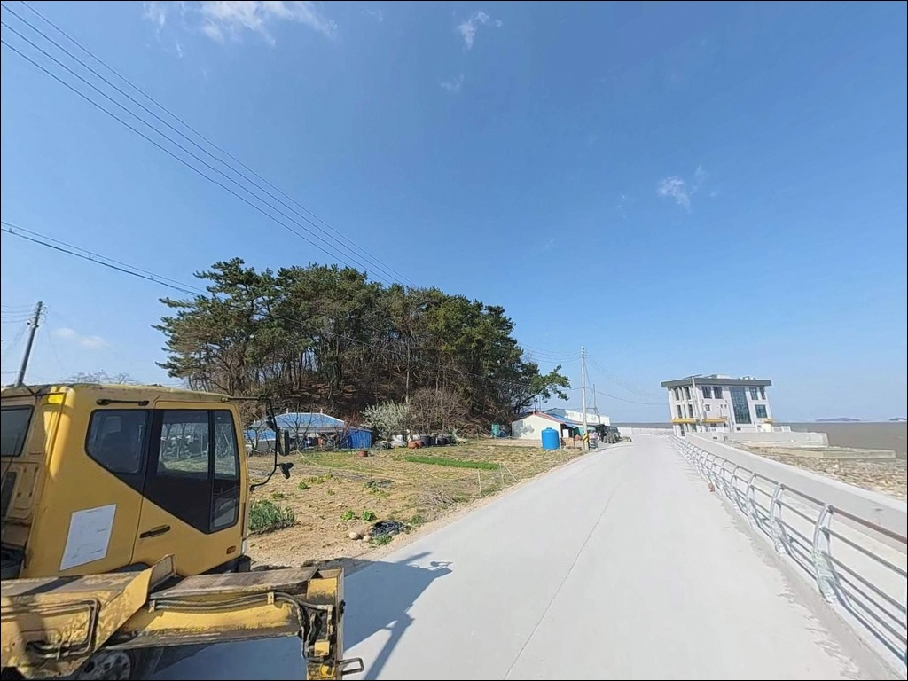
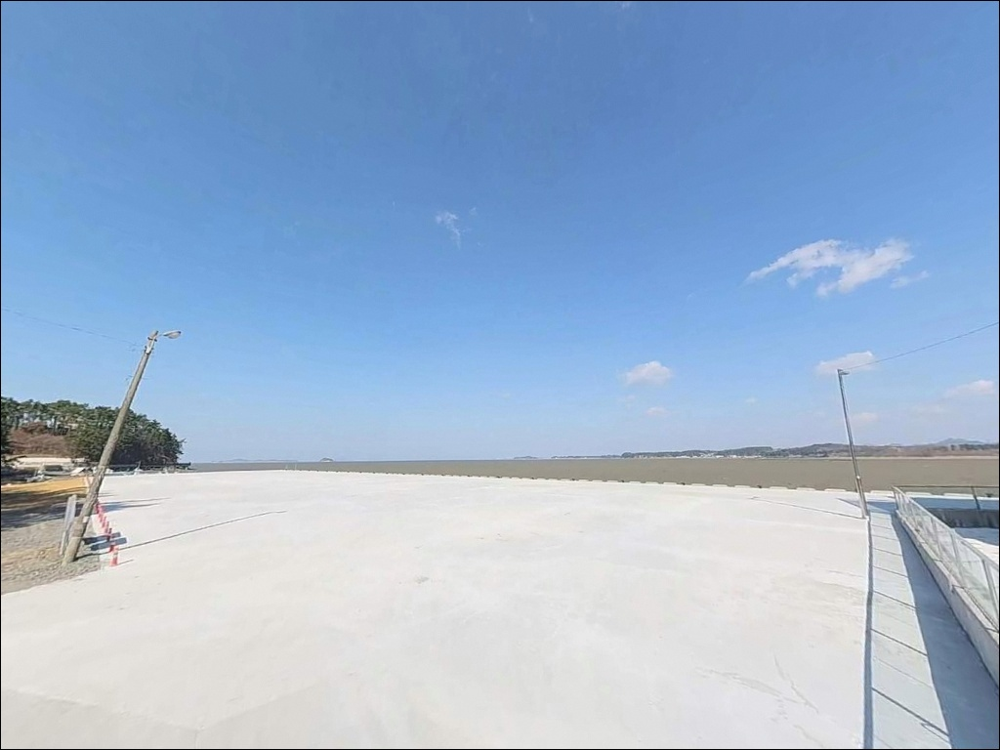
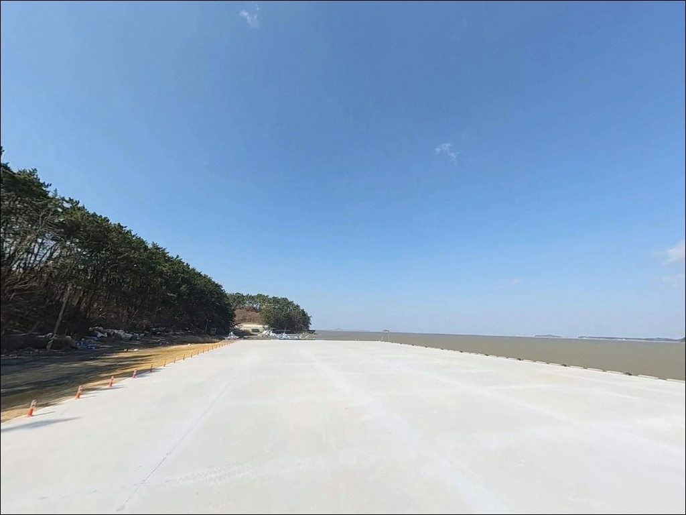
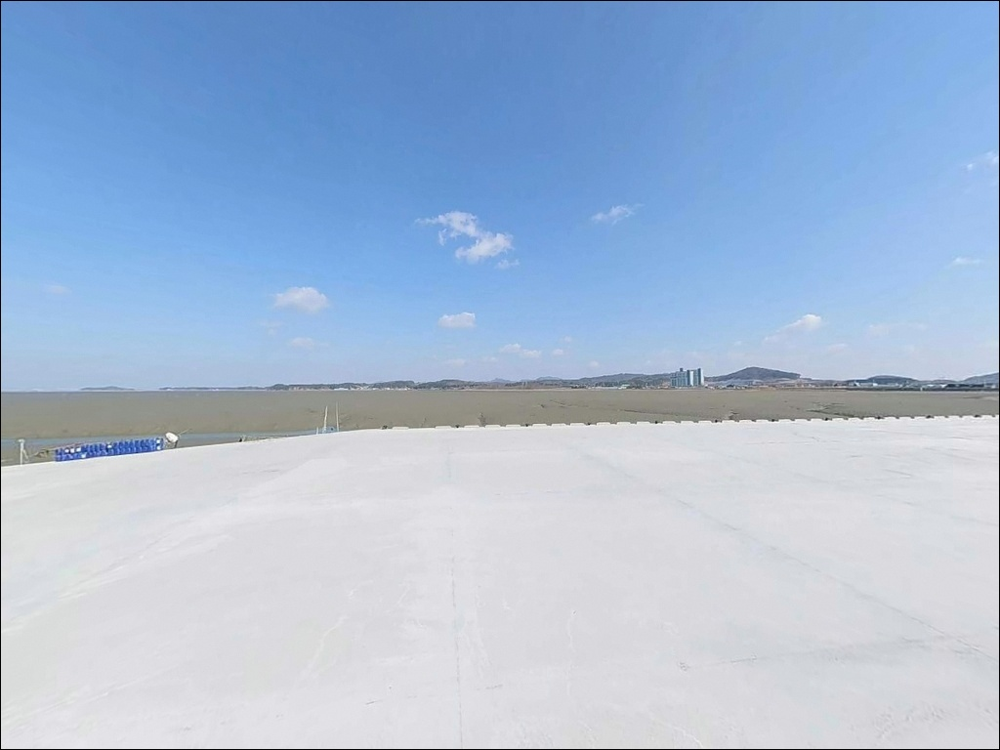
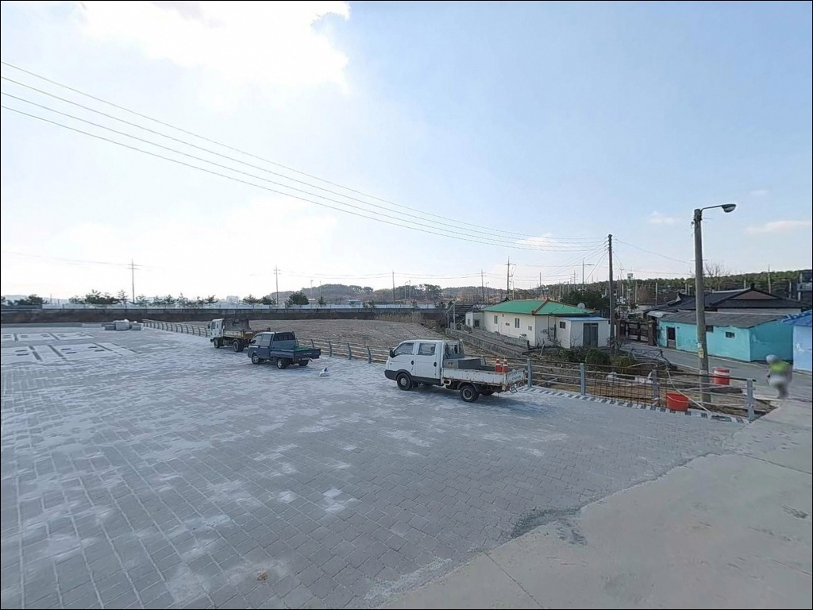

이 페이지에는 광고(제휴 링크 포함)가 있으며, 광고 링크를 통해 구매하면 운영자가 판매 수익 또는 수수료를 받을 수 있습니다. 포인트 사진: 카카오맵 스카이뷰·로드뷰. 이 페이지의 지도·사진 이미지는 카카오맵의 실제 서비스 이미지와 다를 수 있습니다.


송림 갯골, 충남 서천군 자연의 여백을 느낄 수 있는 차박, 낚시 명소
포인트 안내
송림 갯골
충남 서천군 장항읍 송림리 704-4
이 포인트에서 가장 흔한 실수는
물때 계산 없이 도착하거나,
유네스코 세계자연유산 서천갯벌 인접 구역의
낚시 규정을 확인하지 않고 내려서는 것입니다.
간조에 갯벌이 완전히 드러나면
어떤 채비를 써도 던질 곳 자체가 없어집니다.
서천갯벌은 습지보호지역이자
유네스코 세계자연유산으로 지정된 구역과
인접해 있어, 구역별 낚시 가능 여부가 다를 수 있습니다.
현장에서 발길을 돌리는 일을 막으려면
출발 전 서천군청 확인이 먼저입니다.
이 글은 송림 갯골의 지형 구조,
물때 활용 방법, 갯골 낚시 스타일 적합성,
방문 전 확인 사항에 집중합니다.
조황 단정이나 특정 어종 보장은
이 글의 범위에 포함되지 않습니다.

1. 진입 동선과 포인트 접근성
장항송림산림욕장 방면 포장도로를 통해
차량 진입이 가능한 구조입니다.
산림욕장 일대는 관광·체험 시설이 갖춰진 지역이라
공식 주차장이 여러 곳 마련되어 있고,
회차에도 어려움은 없습니다.
주차는 장항송림산림욕장 공용주차장을
기본으로 삼는 것이 현실적입니다.
무료 운영이 확인된 곳으로,
이 주차장에서 갯골 방향으로 도보 이동이
필요한 구간이 있습니다.
갯벌 지반과 인접한 구간은
차량 진입이 어려운 비포장 성격이라
산림욕장 주차장에서 걸어 들어가는 것이 안전합니다.
송림항 갯골어울림센터(지상 3층, 어촌뉴딜 사업 시설)가
포인트 인근에 있어 항 주변 도로 폭과
진입 동선은 어느 정도 확보된 편입니다.

2. 차박 환경과 야간 체류 여건
송림 일대는 장항스카이워크, 갯벌체험장,
산림욕장이 밀집한 관광지 성격이 강한 구역입니다.
주간에는 방문객 유입이 많고,
성수기(여름 맥문동 축제 기간 등)에는
야간에도 인적이 드문 편이 아닙니다.
조용한 차박을 주목적으로 삼기에는
프라이버시 확보가 어렵습니다.
산림욕장 주차장 인근은
조명이 일부 닿는 구간이지만,
갯골로 직접 내려가는 구간은
야간에 어두운 편입니다.
낚시 후 차에서 짧게 쉬어가는 용도라면
주차 여건 자체는 나쁘지 않으나,
유네스코 세계자연유산 인접 구역의
야영·취사 규정은 사전에 반드시 확인해야 합니다.
확인 없이 진행하면 현장에서 제지를 받을 수 있습니다.


3. 주변 편의시설 및 인프라 현황
장항송림산림욕장 내 공중화장실이 있습니다.
편의점은 장항읍 신창리 방향으로
약 2.5km 거리에 세븐일레븐이 있어
출발 전 기본 식품·음료 보충이 가능합니다.
식사는 장항읍 장서로 일대의
장항 6080 음식골목을 활용하면 됩니다.
칼국수, 아귀찜, 박대정식 등
서천 특산 어종 기반 식당이 밀집한 구역으로,
낚시 전후로 들르기 좋습니다.
포인트에서 장항읍까지 거리가 가깝고
도로 사정도 무난한 편입니다.
송림항 갯골어울림센터에는
수산물 직매장이 들어서 있어
신선한 수산물 구매도 가능합니다.

4. 서천갯벌 규정 확인이 방문 성패를 가릅니다
송림 갯골 방문 전 가장 먼저 해야 할 것은
서천군청 또는 환경부 서해안유역환경청에
낚시 가능 여부를 확인하는 일입니다.
이 일대는 유네스코 세계자연유산 서천갯벌의
인접 구역이며, 습지보호지역 경계와
겹칠 가능성이 있습니다.
구역에 따라 낚시 제한이 다를 수 있어
현장에서 직접 확인한 뒤 움직이는 것이
가장 안전한 준비 방법입니다.
갯벌 낚시는 물때 파악이 출조의 전부입니다.
바다타임에서 장항 기준 조석표를 확인하고,
초들물부터 만조까지의 타이밍을 계산해
도착 시각을 역산해 두는 것이 기본입니다.
사리 전후에는 물이 빠르게 빠지고
갯벌 진입 중 고립 위험이 있으므로
간조 시 갯벌 깊숙한 진입은 삼가야 합니다.
구명조끼, 헤드랜턴, 여분 채비를
반드시 준비해야 합니다.
갯벌 바닥은 발이 빠지는 구간이 있고,
야간에는 지형 판단이 어려워집니다.
기상청 해상 예보 확인은 당일 아침
다시 한번 챙기는 편이 좋습니다.

5. 지형 기반 낚시 여건 분석
송림 갯골의 핵심은
넓은 갯벌 사이로 형성된
수로형 갯골 구조입니다.
방파제와 테트라포드가 없는 자연 갯벌·모래 혼합 해안으로,
테트라 주변 루어보다는
갯골 수로를 겨냥한 공략이 이 포인트의 기본 접근법입니다.
수심은 갯벌 특성상 얕은 편이나,
갯골 중심부는 조류 영향으로
주변보다 상대적으로 수심이 유지되는 구간이 있습니다.
특히 갯골이 굴곡지는 합류부와
수로가 꺾이는 홈통 지점은
어류가 집결하는 패턴의 자리입니다.
밀물 초반 갯골 안으로 물이 막 들어오기 시작하면
이 구간에서 입질이 살아나는 구조입니다.
간조 기준으로 갯벌이 크게 드러나므로
낚시 가능 시간대가 물때에 따라 크게 달라집니다.
갯골 낚시의 핵심은 물때이며,
밀물이 들기 시작하는 초들물 타이밍이
조과를 좌우합니다.
최신 조황은 출조 전에 반드시 검색해 두시기 바랍니다.


6. 포인트에 어울리는 낚시 스타일
이 포인트에서 가장 무난한 방식은
원투낚시입니다.
갯골 방향으로 채비를 멀리 던진 뒤
밀물이 들어오는 타이밍을 기다리는 방식으로,
서해 갯벌형 포인트의 기본 공략 패턴입니다.
조류가 움직이기 시작하는 초들물에
채비를 깔아두면 바닥 어종의 이동 타이밍과
맞아 떨어지는 편입니다.
갯골 수로 공략에는
소형 지그헤드나 웜 계열 루어를
활용한 탐색이 어울립니다.
물이 충분히 들어온 만조 전후 시간대에
수로 입구와 합류부 주변을 천천히 훑는 방식입니다.
농어가 갯골을 따라 이동하는 패턴이 있어,
물이 살아 있는 시간대에 루어 반응이
기대되는 자리입니다.
기대해 볼 수 있는 어종은
서해 갯벌+갯골 지형의 일반 패턴을 기준으로 하면
숭어, 망둥어, 붕장어 등 바닥층 어종 위주입니다.
이 포인트에 특정된 조황 자료는 없어
직접 탐색해 보는 것이 가장 정확하며,
서천 갯벌 인접 포인트의 최신 조황 검색을
출조 전에 반드시 먼저 해두는 것이 좋습니다.
서천갯벌 낚시 규정 확인 이후 방문 여부를 최종 결정하는 순서가
가장 현명한 준비 방법입니다.

7. 대안 포인트와 플랜 B 동선
송림 갯골에서 물때가 맞지 않거나
규정 문제로 낚시가 어려운 상황이라면
홍원항 방파제가 첫 번째 대안입니다.
서천군 서면에 위치한 홍원항은
낚시 커뮤니티에서 서해 방파제 포인트로
다수 언급되는 곳입니다.
피싱피어 시설이 있어 발판이 안정적이고,
원투낚시와 테트라 인근 루어낚시가
함께 가능한 구조입니다.
장항항 방파제도 무난한 대안입니다.
갯골보다 수심이 확보된 방파제 구조로,
조류 소통이 원활하고 접근이 쉬운 편입니다.
송림 갯골 낚시를 처음 계획한다면
장항항을 거점으로 잡고
갯골 포인트를 병행 탐색하는 동선이
효율적입니다.
차박 대체 후보로는
송림 북쪽의 솔바람캠핑장이 있습니다.
전기·물 공급 시설이 갖춰진 정식 캠핑장으로,
관광지 주차장보다 차박 여건이 안정적입니다.

물때와 규정, 두 가지를 갖추면
송림 갯골이 달라 보입니다
갯골 수로를 타고 들어오는 어종을
초들물 타이밍에 공략하고 싶은 낚시인이라면
송림 갯골의 지형 구조는 맞는 편입니다.
방파제 낚시와 달리 발판이 아닌 갯벌 자체를
읽어야 하는 포인트라
탐색의 재미가 있는 자리이기도 합니다.
다만 유네스코 세계자연유산 서천갯벌
인접 구역이라는 조건은
방문 전 반드시 확인이 필요한 사안입니다.
규정 확인 → 물때 계산 → 현장 진입,
이 순서를 지키지 않으면
헛걸음으로 끝날 수 있는 포인트입니다.
반대로 이 세 가지를 갖추고 간다면,
아직 많이 알려지지 않은 조용한 갯골 포인트를
먼저 개척하는 경험이 될 수 있습니다.
관광지 분위기보다 조용한 체류를 원한다면
인근 솔바람캠핑장을 거점으로 삼고,
초들물 타이밍에 갯골 포인트로 이동하는 동선이
낚시와 차박을 동시에 즐기기 좋은 방법입니다.